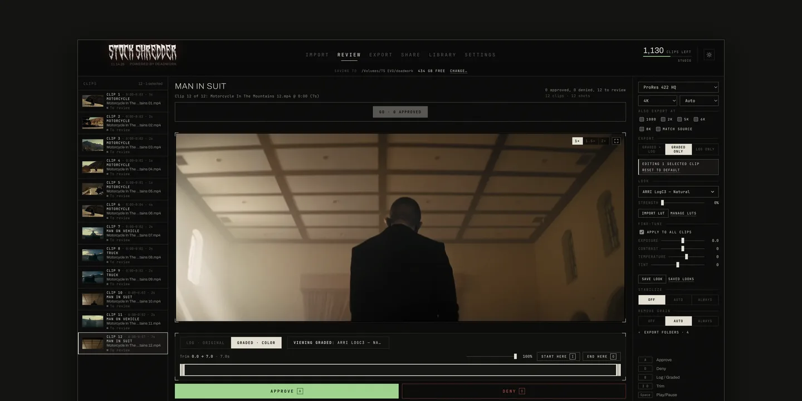
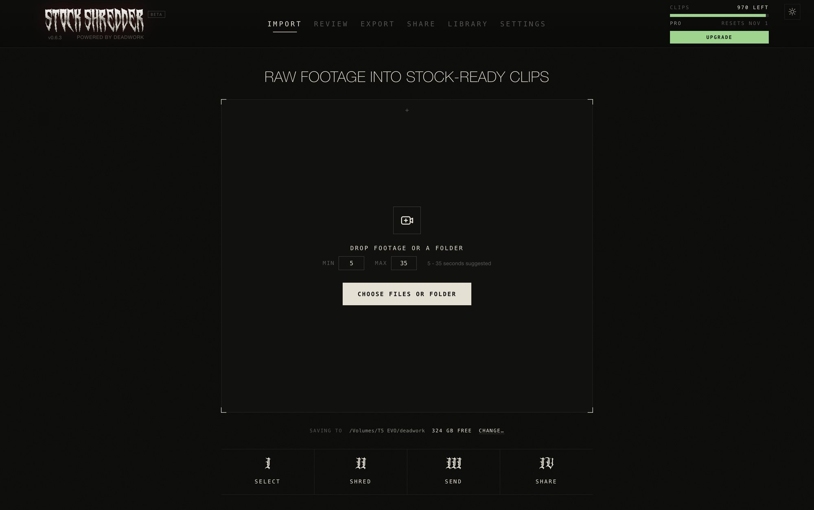

Stock Shredder · Automatic clipping
Automatic Clipping Software for Stock Footage
Scene detection finds cuts. Raw footage has none. Here's what automatic clipping for stock actually needs to do.

The short version
- Scene detection splits edited video at its cuts.
- Raw camera files have no cuts inside, so it has little to find.
- Stock needs the usable moments found and trimmed to length.
- Then each clip graded, exported, named and keyworded.
- Stock Shredder does all of that in one pass. You review.
1,000 clips took 3 hours 1 minute in our test.
Cutting is the slow part.
A card from a shoot day holds long takes. Somewhere in each one are a few seconds a buyer would pay for: the steady part of a pan, the moment before the drone turns, the wave before the camera bumps.
Finding those seconds by hand means scrubbing every file, setting in and out, and exporting each clip on its own. At about 2 minutes a clip, 500 clips is 16+ hours.
That's why people search for automatic clipping. The catch is that most "auto cut" tools solve a different problem.
What scene detection does, fairly.
- Premiere Pro, Scene Edit Detection. Finds the cuts within a video file and separates it into individual shots.
- DaVinci Resolve, Scene Cut Detection. Finds shot changes in a finished, flattened file and splits it into shot ranges. On the Media page it works in the free version. The timeline version needs Studio.
- Built for edited video. Both look for the point where one shot changes to the next. That's ideal for rebuilding an old edit or grading a finished film.
- Not an export. Neither picks usable moments, grades or renders separate files. That's still a job for you.
Sources: Adobe Premiere Pro help, DaVinci Resolve Scene Cut Detection guide. Checked November 2026.
Scene detection vs stock clipping.
| Step | Scene detection | Stock Shredder |
|---|---|---|
| Split at existing cuts | Yes | Not needed for raw files |
| Find usable moments in long takes | No | Yes |
| Trim to stock length | No | Yes, inside the Min and Max you set |
| Set aside shaky or broken parts | No | Yes, with Keep anyway |
| Grade log footage | No | Looks for ARRI, DJI, RED, Sony, or your LUT |
| Export each clip as its own file | No, separate render | Yes, ProRes |
| Stock checks | No | Logos, HDR, frame rate, under 2K |
| Names and keywords | No | Clear names, a folder per clip, keywords to paste |
The rest of the hours are covered in how to prepare stock footage faster. Exporting from Premiere today? See Stock Shredder vs batch export in Premiere Pro.
The by-hand way.
- Scrub each file and find the usable seconds.
- Set in and out so the clip fits the site's length.
- Grade log to a clean Rec 709.
- Export each clip as its own file.
- Rename it so you can find it again.
- Write a title and keywords.
Our average is about 2 minutes per clip.
The Stock Shredder way.
Point Stock Shredder at a folder of raw footage on your Mac or Windows computer.

- It finds the moments. Usable shots come out of long takes as clips.
- It cuts where the camera is calm. Set Min and Max, and each clip runs as long as Max allows.
- It sets aside the bad parts. Broken, empty and too-shaky clips are filtered, and shaky or short parts show why.
- It checks. Logos, HDR, wrong frame rates and footage under 2K are flagged before you upload.
- It grades and exports. Built-in Looks for ARRI, DJI, RED and Sony, or your own LUT. Each clip its own ProRes file.
- It names and keywords. Every shot gets a clear name and its own folder. Keywords ready to paste on Pro, Studio and the free trial.

The time difference, measured.
Real Sony FX6 and FX3 footage on a MacBook Pro M3 Pro, exported to an external SSD as graded ProRes 422 HQ 4K.
100 clips
500 clips
1,000 clips
Stock Shredder time is shred plus export. Review time not included. By hand: 2 minutes per clip average.
What to know before you start.
Stock Shredder handles the repetitive parts. A few things stay with you.
- You review. It finds the usable shots. Your eye picks the ones that sell.
- You set the length. Pick a Min and Max that fit the sites you upload to.
- Check your format. Canon Cinema RAW Light and Nikon N-RAW aren't supported yet. Sony, DJI, ARRI, RED and Blackmagic files are.
- It runs overnight. It keeps your computer awake while it exports and tells you when it's done, so a full drive is ready by morning.
When scene detection makes more sense.
- You're splitting a finished edit back into its shots.
- You're grading a flattened film and need each shot on its own.
- You only have a handful of clips and want full control of every frame.
For a card full of raw takes, there are no cuts to find. The work is finding the moments, and that's the part worth handing off.
More on site rules: How to Prepare Footage for Adobe Stock, Pond5 and Shutterstock.
FAQ
Can Premiere Pro cut raw footage into stock clips automatically?
Premiere Pro's Scene Edit Detection finds the cuts in a video file and splits it into shots. Raw camera files usually have no cuts inside them, so it has little to find. Picking the usable moments and trimming them is still up to you.
What about DaVinci Resolve's Scene Cut Detection?
It finds shot changes in a finished, already-edited file and splits it into shot ranges. It doesn't pick usable moments, grade or export separate files. A render step is still needed.
How does Stock Shredder decide where to cut?
You set a Min and Max clip length. Each clip runs as long as Max allows and is cut where the camera is calm. Broken, empty and too-shaky parts are set aside, with Keep anyway if you disagree.
Do I still review the clips?
Yes. Stock Shredder finds and trims the moments, then you approve or deny each one from the keyboard before export. It remembers every clip you've reviewed, so you never review one twice.
Does it name and keyword the clips too?
Every shot gets a clear name and its own folder. On Pro, Studio and the free trial, it also writes titles and ready-to-paste keywords for every exported clip.